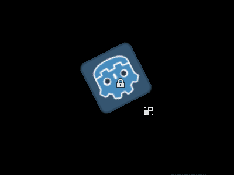
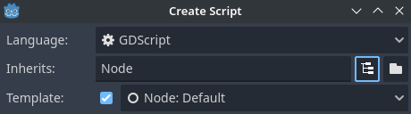

Chạy code trong trình chỉnh sửa
@tool là gì?
@tool là một dòng code mạnh mẽ, khi được thêm vào đầu script sẽ khiến script chạy trong trình chỉnh sửa. Bạn cũng có thể quyết định phần nào của script chạy trong trình chỉnh sửa, phần nào chạy trong game, và phần nào chạy ở cả hai.
Bạn có thể dùng nó cho nhiều việc, nhưng nó hữu ích nhất trong thiết kế màn chơi để trực quan hóa những thứ khó tự dự đoán. Dưới đây là một số trường hợp sử dụng:
Nếu bạn có một khẩu pháo bắn ra đạn chịu tác động vật lý (trọng lực), bạn có thể vẽ quỹ đạo của viên đạn trong trình chỉnh sửa, giúp thiết kế màn chơi dễ hơn nhiều.
Nếu bạn có các bệ nhảy với độ cao nhảy khác nhau, bạn có thể vẽ độ cao nhảy tối đa mà người chơi đạt được nếu nhảy lên đó, cũng giúp thiết kế màn chơi dễ hơn.
Nếu nhân vật người chơi không dùng sprite mà tự vẽ bằng code, bạn có thể cho code vẽ đó chạy trong trình chỉnh sửa để thấy nhân vật.
Nguy hiểm
Script @tool chạy bên trong trình chỉnh sửa và cho phép bạn truy cập cây scene của scene đang được chỉnh sửa. Đây là một tính năng mạnh mẽ nhưng cũng đi kèm rủi ro, vì trình chỉnh sửa không có cơ chế bảo vệ trước việc lạm dụng script @tool. Hãy cực kỳ cẩn thận khi thao tác với cây scene, đặc biệt qua Node.queue_free, vì nó có thể gây crash nếu bạn giải phóng một node trong khi trình chỉnh sửa đang chạy logic liên quan đến node đó.
Cách dùng @tool
Để biến một script thành tool, hãy thêm annotation @tool vào đầu code.
Để kiểm tra xem bạn có đang ở trong trình chỉnh sửa hay không, dùng: Engine.is_editor_hint().
Ví dụ, nếu bạn muốn chỉ chạy một đoạn code trong trình chỉnh sửa, dùng:
if Engine.is_editor_hint():
# Code to execute when in editor.
if (Engine.IsEditorHint())
{
// Code to execute when in editor.
}
Ngược lại, nếu bạn muốn chỉ chạy code trong game, chỉ cần phủ định cùng câu lệnh đó:
if not Engine.is_editor_hint():
# Code to execute when in game.
if (!Engine.IsEditorHint())
{
// Code to execute when in game.
}
Các đoạn code không có điều kiện nào trong 2 điều kiện trên sẽ chạy cả trong trình chỉnh sửa lẫn trong game.
Một hàm _process() của bạn có thể trông như sau:
func _process(delta):
if Engine.is_editor_hint():
# Code to execute in editor.
if not Engine.is_editor_hint():
# Code to execute in game.
# Code to execute both in editor and in game.
public override void _Process(double delta)
{
if (Engine.IsEditorHint())
{
// Code to execute in editor.
}
if (!Engine.IsEditorHint())
{
// Code to execute in game.
}
// Code to execute both in editor and in game.
}
Thông tin quan trọng
Quy tắc chung là mọi GDScript khác mà tool script của bạn sử dụng cũng *phải* là tool. Trình chỉnh sửa không thể tạo instance từ các file GDScript không có @tool, nghĩa là bạn không thể gọi phương thức hay tham chiếu biến thành viên từ chúng. Tuy nhiên, vì phương thức tĩnh, hằng số và enum có thể dùng mà không cần tạo instance, bạn có thể gọi hoặc tham chiếu chúng từ một script @tool sang các script không phải tool. Một ngoại lệ là biến tĩnh. Nếu bạn đọc giá trị của một biến tĩnh trong script không có @tool, nó sẽ luôn trả về null mà không in ra cảnh báo hay lỗi nào. Hạn chế này không áp dụng cho phương thức tĩnh, vốn có thể được gọi bất kể script đích có ở chế độ tool hay không.
Việc kế thừa một script @tool không tự động biến script kế thừa thành @tool. Bỏ @tool khỏi script kế thừa sẽ vô hiệu hóa hành vi tool của lớp cha. Vì vậy, script kế thừa cũng nên khai báo annotation @tool.
Các thay đổi trong trình chỉnh sửa là vĩnh viễn, không thể undo/redo. Ví dụ, ở phần tiếp theo khi chúng ta gỡ script, node vẫn giữ nguyên góc xoay. Hãy cẩn thận để tránh tạo ra thay đổi ngoài ý muốn. Hãy cân nhắc thiết lập quản lý phiên bản để tránh mất công sức nếu bạn mắc lỗi.
Debug
Dù không thể dùng trực tiếp debugger và breakpoint với tool script, bạn có thể khởi chạy một instance mới của trình chỉnh sửa và debug từ đó. Để làm vậy, vào Debug > Customize Run Instances... và chỉ định --editor trong Main Run Args.
Xem Tổng quan về các công cụ gỡ lỗi để biết thêm thông tin.
Ngoài ra, bạn có thể dùng các câu lệnh print để hiển thị nội dung biến.
Thử dùng @tool
Thêm một node Sprite2D vào scene và đặt texture là biểu tượng Godot. Gắn và mở một script, rồi sửa nó thành như sau:
@tool
extends Sprite2D
func _process(delta):
rotation += PI * delta
using Godot;
[Tool]
public partial class MySprite : Sprite2D
{
public override void _Process(double delta)
{
Rotation += Mathf.Pi * (float)delta;
}
}
Lưu script và quay lại trình chỉnh sửa. Giờ bạn sẽ thấy đối tượng xoay. Nếu chạy game, nó cũng sẽ xoay.
Cảnh báo
Bạn có thể cần khởi động lại trình chỉnh sửa. Đây là một lỗi đã biết có trong mọi phiên bản Godot 4: GH-66381.

Ghi chú
Nếu không thấy thay đổi, hãy tải lại scene (đóng rồi mở lại).
Giờ hãy chọn code nào chạy khi nào. Sửa hàm _process() thành như sau:
func _process(delta):
if Engine.is_editor_hint():
rotation += PI * delta
else:
rotation -= PI * delta
public override void _Process(double delta)
{
if (Engine.IsEditorHint())
{
Rotation += Mathf.Pi * (float)delta;
}
else
{
Rotation -= Mathf.Pi * (float)delta;
}
}
Lưu script. Giờ đối tượng sẽ xoay theo chiều kim đồng hồ trong trình chỉnh sửa, nhưng nếu chạy game, nó sẽ xoay ngược chiều kim đồng hồ.
Chỉnh sửa biến
Thêm và export một biến speed vào script. Để cập nhật tốc độ và đồng thời đặt lại góc xoay, hãy thêm một setter set(new_speed) được thực thi với đầu vào từ inspector. Sửa _process() để dùng tốc độ xoay.
@tool
extends Sprite2D
@export var speed = 1:
# Update speed and reset the rotation.
set(new_speed):
speed = new_speed
rotation = 0
func _process(delta):
rotation += PI * delta * speed
using Godot;
[Tool]
public partial class MySprite : Sprite2D
{
private float _speed = 1;
[Export]
public float Speed
{
get => _speed;
set
{
// Update speed and reset the rotation.
_speed = value;
Rotation = 0;
}
}
public override void _Process(double delta)
{
Rotation += Mathf.Pi * (float)delta * _speed;
}
}
Ghi chú
Code từ các node khác không chạy trong trình chỉnh sửa. Quyền truy cập của bạn vào các node khác bị giới hạn. Bạn có thể truy cập cây và các node, cùng các thuộc tính mặc định của chúng, nhưng không thể truy cập biến do người dùng định nghĩa. Nếu muốn, các node khác cũng phải chạy trong trình chỉnh sửa.
Nhận thông báo khi mảng hoặc dictionary thay đổi
Bạn có thể dùng Array hoặc Dictionary làm biến @export. Trong script @tool, bạn có thể phản ứng với mọi thay đổi của collection đó bằng một setter. Thông thường, khi chạy, setter như vậy chỉ được gọi khi bạn gán giá trị cho biến, nhưng khi bạn chỉnh sửa Array hoặc Dictionary trong inspector, setter cũng sẽ được gọi.
@tool
class_name MyTool
extends Node
@export var my_array = []:
set(new_array):
my_array = new_array
print("My array just changed!")
@export var my_dictionary = {}:
set(new_dictionary):
my_dictionary = new_dictionary
print("My dictionary just changed!")
using Godot;
[Tool]
public partial class MyTool : Node
{
private Array _myArray = new();
private Dictionary _myDictionary = new();
[Export]
public Array MyArray
{
get => _myArray;
set
{
_myArray = value;
GD.Print("My array just changed!");
}
}
[Export]
public Dictionary MyDictionary
{
get => _myDictionary;
set
{
_myDictionary = value;
GD.Print("My dictionary just changed!");
}
}
}
Nhận thông báo khi resource thay đổi
Đôi khi bạn muốn tool của mình dùng một resource. Tuy nhiên, khi bạn thay đổi một thuộc tính của resource đó trong trình chỉnh sửa, phương thức set() của tool sẽ không được gọi.
@tool
class_name MyTool
extends Node
@export var resource: MyResource:
set(new_resource):
resource = new_resource
_on_resource_set()
# This will only be called when you create, delete, or paste a resource.
# You will not get an update when tweaking properties of it.
func _on_resource_set():
print("My resource was set!")
using Godot;
[Tool]
public partial class MyTool : Node
{
private MyResource _resource;
[Export]
public MyResource Resource
{
get => _resource;
set
{
_resource = value;
OnResourceSet();
}
}
// This will only be called when you create, delete, or paste a resource.
// You will not get an update when tweaking properties of it.
private void OnResourceSet()
{
GD.Print("My resource was set!");
}
}
Để khắc phục vấn đề này, trước tiên bạn phải biến resource thành tool và cho nó phát signal changed mỗi khi một thuộc tính được đặt:
# Make Your Resource a tool.
@tool
class_name MyResource
extends Resource
@export var property = 1:
set(new_setting):
property = new_setting
# Emit a signal when the property is changed.
changed.emit()
using Godot;
[Tool]
public partial class MyResource : Resource
{
private float _property = 1;
[Export]
public float Property
{
get => _property;
set
{
_property = value;
// Emit a signal when the property is changed.
EmitChanged();
}
}
}
Sau đó bạn kết nối signal khi một resource mới được đặt:
@tool
class_name MyTool
extends Node
@export var resource: MyResource:
set(new_resource):
resource = new_resource
# Connect the changed signal as soon as a new resource is being added.
if resource != null:
resource.changed.connect(_on_resource_changed)
func _on_resource_changed():
print("My resource just changed!")
using Godot;
[Tool]
public partial class MyTool : Node
{
private MyResource _resource;
[Export]
public MyResource Resource
{
get => _resource;
set
{
_resource = value;
// Connect the changed signal as soon as a new resource is being added.
if (_resource != null)
{
_resource.Changed += OnResourceChanged;
}
}
}
private void OnResourceChanged()
{
GD.Print("My resource just changed!");
}
}
Cuối cùng, hãy nhớ ngắt kết nối signal, vì resource cũ được dùng và thay đổi ở nơi khác sẽ gây ra các lần cập nhật không cần thiết.
@export var resource: MyResource:
set(new_resource):
# Disconnect the signal if the previous resource was not null.
if resource != null:
resource.changed.disconnect(_on_resource_changed)
resource = new_resource
if resource != null:
resource.changed.connect(_on_resource_changed)
[Export]
public MyResource Resource
{
get => _resource;
set
{
// Disconnect the signal if the previous resource was not null.
if (_resource != null)
{
_resource.Changed -= OnResourceChanged;
}
_resource = value;
if (_resource != null)
{
_resource.Changed += OnResourceChanged;
}
}
}
Báo cáo cảnh báo cấu hình node
Godot dùng hệ thống cảnh báo cấu hình node để cảnh báo người dùng về các node được cấu hình sai. Khi một node không được cấu hình đúng, một biểu tượng cảnh báo màu vàng sẽ xuất hiện cạnh tên node trong Scene dock. Khi bạn di chuột hoặc nhấn vào biểu tượng, một thông điệp cảnh báo sẽ hiện ra. Bạn có thể dùng tính năng này trong script để giúp bạn và nhóm tránh sai sót khi thiết lập scene.
Khi dùng cảnh báo cấu hình node, mỗi khi bất kỳ giá trị nào ảnh hưởng đến hoặc làm mất cảnh báo thay đổi, bạn cần gọi update_configuration_warnings . Theo mặc định, cảnh báo chỉ cập nhật khi đóng và mở lại scene.
# Use setters to update the configuration warning automatically.
@export var title = "":
set(p_title):
if p_title != title:
title = p_title
update_configuration_warnings()
@export var description = "":
set(p_description):
if p_description != description:
description = p_description
update_configuration_warnings()
func _get_configuration_warnings():
var warnings = []
if title == "":
warnings.append("Please set `title` to a non-empty value.")
if description.length() >= 100:
warnings.append("`description` should be less than 100 characters long.")
# Returning an empty array means "no warning".
return warnings
Chạy script một lần bằng EditorScript
Đôi khi, bạn cần chạy code chỉ một lần để tự động hóa một tác vụ mà trình chỉnh sửa không có sẵn. Một số ví dụ:
Dùng làm sân chơi để viết script GDScript hoặc C# mà không cần chạy dự án. Kết quả
print()được hiển thị trong Output panel của trình chỉnh sửa.Điều chỉnh tỷ lệ tất cả các node đèn trong scene đang chỉnh sửa, khi bạn nhận ra màn chơi trông quá tối hoặc quá sáng sau khi đặt đèn ở vị trí mong muốn.
Thay thế các node được sao chép-dán bằng instance của scene để dễ chỉnh sửa sau này.
Bạn có thể làm điều này trong Godot bằng cách kế thừa class_EditorScript trong một script. Đây là cách chạy từng script riêng lẻ trong trình chỉnh sửa mà không cần tạo plugin.
Để tạo một EditorScript, nhấn chuột phải vào một thư mục hoặc vùng trống trong FileSystem dock rồi chọn New > Script.... Trong hộp thoại tạo script, nhấn biểu tượng cây để chọn đối tượng cần kế thừa (hoặc nhập trực tiếp EditorScript vào ô bên trái, nhưng lưu ý phân biệt chữ hoa chữ thường):

Tạo editor script trong hộp thoại tạo script của trình soạn thảo script
Thao tác này sẽ tự động chọn một mẫu script phù hợp cho EditorScript, với phương thức _run() đã được chèn sẵn:
@tool
extends EditorScript
# Called when the script is executed (using File -> Run in Script Editor).
func _run():
pass
using Godot;
[Tool]
public partial class MyEditorScript : EditorScript
{
// Called when the script is executed (right-click on Script -> Run in FileSystem dock).
public override void _Run()
{
// ...
}
}
Phương thức _run() này được thực thi khi bạn dùng bất kỳ cách nào trong 4 cách để chạy một EditorScript:
Dùng ở phía trên trình chỉnh sửa script khi EditorScript đang là tab hiện tại.
Nhấn phím tắt Ctrl + Shift + X khi EditorScript đang là tab hiện tại. Phím tắt này chỉ có tác dụng khi trình chỉnh sửa script đang được focus.
Nhấn chuột phải vào script trong FileSystem dock và chọn .
Thêm
class_name <name>vào đầu script, mở bảng lệnh bằng cách nhấn Ctrl + Shift + P, rồi nhập tên lớp để chạy nó. Mục này sẽ được đặt tên theo tên lớp, có tự động viết hoa.
Script kế thừa EditorScript bắt buộc phải là script @tool mới hoạt động được.
Ghi chú
EditorScript chỉ có thể chạy từ trình chỉnh sửa script của Godot. Nếu bạn dùng trình soạn thảo bên ngoài, hãy dùng một trong hai cách cuối để chạy script.
Ghi chú
Không thể chạy EditorScript C# từ trình chỉnh sửa script vì nó chỉ hỗ trợ GDScript. Vui lòng tham khảo các cách thay thế ở trên để chạy EditorScript C# tùy chỉnh.
Lưu ý rằng tool script C# chỉ xuất hiện trong bảng lệnh khi được đánh dấu bằng attribute GlobalClass.
Nguy hiểm
EditorScript không có chức năng undo/redo, vì vậy hãy lưu scene trước khi chạy nếu script được thiết kế để sửa đổi dữ liệu.
Để truy cập các node trong scene đang chỉnh sửa, dùng phương thức EditorInterface.get_edited_scene_root(), phương thức này trả về Node gốc của scene đang chỉnh sửa. Dưới đây là ví dụ lấy đệ quy tất cả node trong scene đang chỉnh sửa và nhân đôi phạm vi của tất cả node OmniLight3D:
@tool
# Thanks to the class name, we can run this script by bringing up
# the command palette and searching "Scale Omni Lights".
class_name ScaleOmniLights
extends EditorScript
func _run():
for node in EditorInterface.get_edited_scene_root().find_children("", "OmniLight3D"):
# Don't operate on instanced subscene children, as changes are lost
# when reloading the scene.
# See the "Instancing scenes" section below for a description of `owner`.
var is_instanced_subscene_child = node != get_scene() and node.owner != get_scene()
if not is_instanced_subscene_child:
node.omni_range *= 2.0
EditorInterface.mark_scene_as_unsaved()
using Godot;
[GlobalClass, Tool]
// Thanks to the GlobalClass attribute, we can run this script by bringing up
// the command palette and searching "Scale Omni Lights".
public partial class ScaleOmniLights : EditorScript
{
public override void _Run()
{
var sceneNode = EditorInterface.Singleton.GetEditedSceneRoot();
foreach (OmniLight3D node in sceneNode.FindChildren("", "OmniLight3D"))
{
// Don't operate on instanced subscene children, as changes are lost
// when reloading the scene.
// See the "Instancing scenes" section below for a description of `owner`.
var isInstancedSubsceneChild = node != sceneNode && node.Owner != sceneNode;
if (!isInstancedSubsceneChild)
{
node.OmniRange *= 2.0f;
EditorInterface.Singleton.MarkSceneAsUnsaved();
}
}
}
}
Trong ví dụ trên, chúng ta cũng gọi EditorScript.mark_scene_as_unsaved() sau mỗi thay đổi ảnh hưởng đến trạng thái của scene. Điều này cho phép trình chỉnh sửa hiển thị scene là "chưa lưu" (tức là có dấu sao cạnh tên). Nhờ đó, bạn cũng nhận được hộp xác nhận khi cố đóng scene có thay đổi chưa lưu.
Mẹo
Bạn có thể đổi scene đang chỉnh sửa ở phía trên trình chỉnh sửa ngay cả khi chế độ xem Script đang mở. Điều này sẽ ảnh hưởng đến giá trị trả về của EditorInterface.get_edited_scene_root, vì vậy hãy chắc chắn bạn đã chọn đúng scene muốn duyệt trước khi chạy script.
Tạo instance scene
Bạn có thể tạo instance các packed scene như bình thường và thêm chúng vào scene đang mở trong trình chỉnh sửa. Theo mặc định, các node hoặc scene được thêm bằng Node.add_child(node) sẽ không hiển thị trong Scene tree dock và không được lưu xuống đĩa. Nếu muốn node hoặc scene hiển thị trong Scene tree dock và được lưu xuống đĩa khi lưu scene, bạn cần đặt thuộc tính owner của node con thành node gốc của scene đang chỉnh sửa.
Nếu bạn đang dùng @tool:
func _ready():
var node = Node3D.new()
add_child(node) # Parent could be any node in the scene
# The line below is required to make the node visible in the Scene tree dock
# and persist changes made by the tool script to the saved scene file.
node.owner = get_tree().edited_scene_root
public override void _Ready()
{
var node = new Node3D();
AddChild(node); // Parent could be any node in the scene
// The line below is required to make the node visible in the Scene tree dock
// and persist changes made by the tool script to the saved scene file.
node.Owner = GetTree().EditedSceneRoot;
}
Nếu bạn đang dùng EditorScript:
func _run():
# `parent` could be any node in the scene.
var parent = get_scene().get_node("Parent")
var node = Node3D.new()
parent.add_child(node)
# The line below is required to make the node visible in the Scene tree dock
# and persist changes made by the tool script to the saved scene file.
node.owner = get_scene()
public override void _Run()
{
// `parent` could be any node in the scene.
var parent = GetScene().GetNode("Parent");
var node = new Node3D();
parent.AddChild(node);
// The line below is required to make the node visible in the Scene tree dock
// and persist changes made by the tool script to the saved scene file.
node.Owner = GetScene();
}
Ghi chú
Các thay đổi do tool script và EditorScript tạo ra (như thêm node hoặc sửa thuộc tính) không tự động đánh dấu scene là chưa lưu. Để hiển thị dấu sao (*) và tránh vô tình mất dữ liệu, hãy gọi EditorInterface.mark_scene_as_unsaved() sau khi sửa đổi, hoặc dùng EditorUndoRedoManager để hỗ trợ undo.
Cảnh báo
Dùng @tool không đúng cách có thể gây ra nhiều lỗi. Bạn nên viết code như ý muốn trước, rồi mới thêm annotation @tool vào đầu. Ngoài ra, hãy tách biệt code chạy trong trình chỉnh sửa với code chạy trong game. Bằng cách này, bạn có thể tìm lỗi dễ dàng hơn.